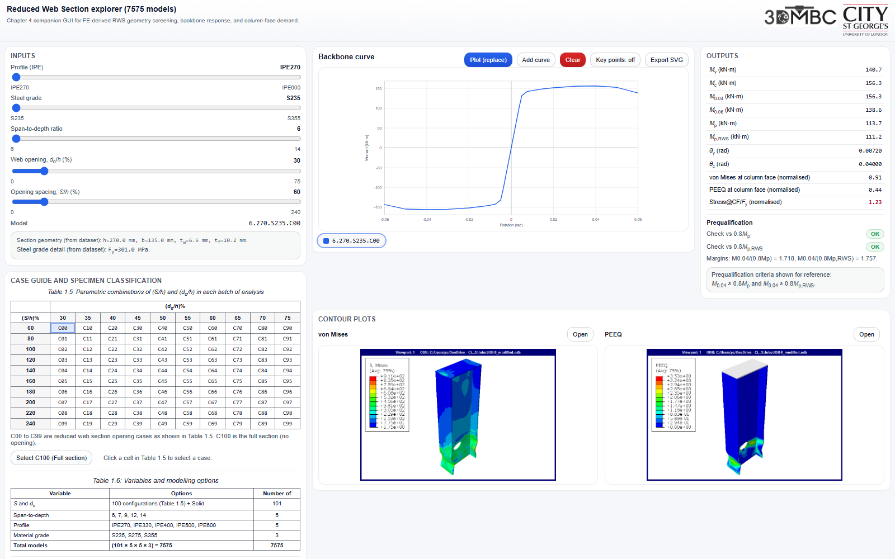
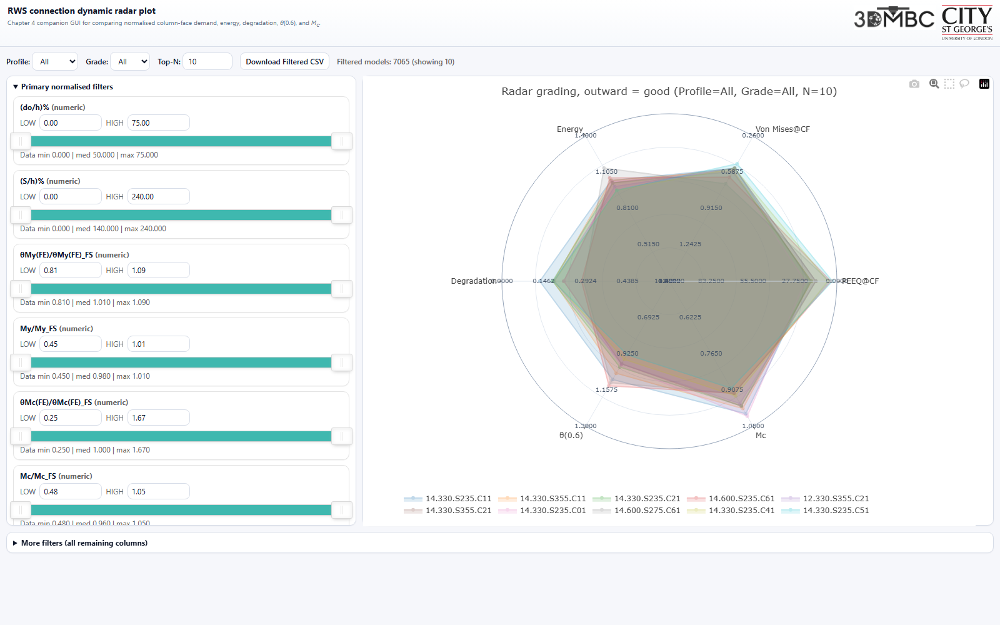
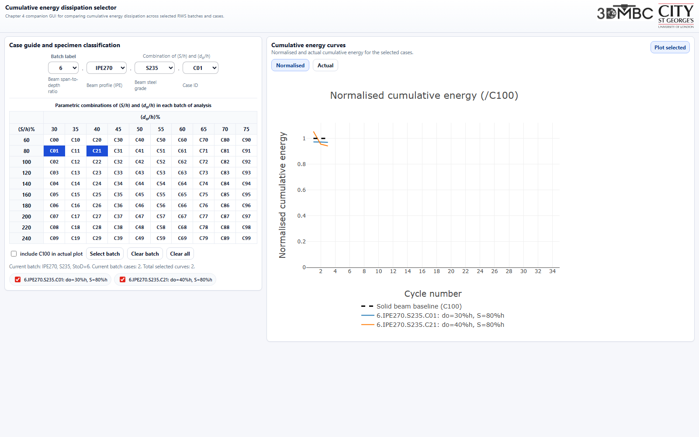
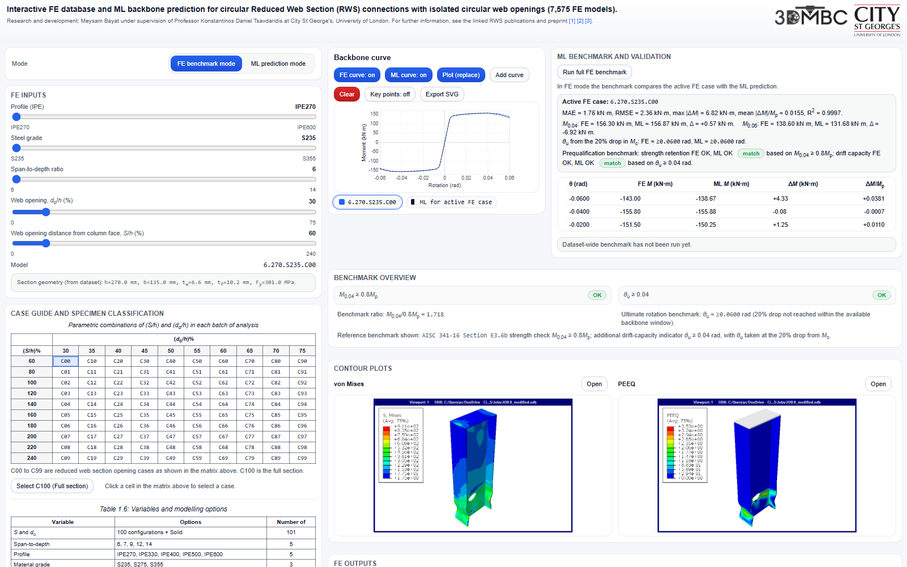

FE database and GUI exploration
Reduced Web Section Explorer
Interrogate the 7,575-case circular RWS finite element database, including geometry, backbone response, and column-face demand.
Open GUIPredicting Reduced Web Section (RWS) Connection Performance with Circular Web Opening in Steel Moment Frames
Supplementary material for the thesis: https://doi.org/10.25383/city.31537849

Interrogate the 7,575-case circular RWS finite element database, including geometry, backbone response, and column-face demand.
Open GUI
Normalised comparison of column-face demand, cumulative energy, degradation, M0.06/M0.06,FS, and moment demand.
Open GUI
Batch-wise comparison of cumulative hysteretic energy dissipation trends across RWS connection models.
Open GUI
Interactive FE and machine learning comparison for predicting backbone moment-rotation curves of circular RWS connections.
Open GUI